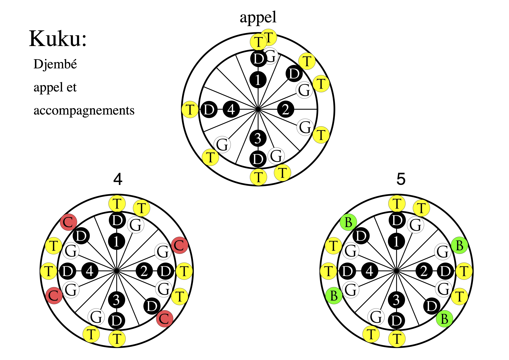

Forest Drums 🌳
Morceaux à l'étude cette année scolaire (2025/26)
Resources pour apprendre
Nous abordons le rythme Kuku actuellement. Voici une vidéo qui enseigne un break pour démarer le morceau:
Kuku avec break.
Diagrammes pour apprendre
Nous utilisons les diagrammes comme ceci.
